#> ── Attaching core tidyverse packages ──────────────────────── tidyverse 2.0.0 ──
#> ✔ dplyr 1.1.0 ✔ readr 2.1.4
#> ✔ forcats 1.0.0 ✔ stringr 1.5.0
#> ✔ ggplot2 3.4.1 ✔ tibble 3.2.0
#> ✔ lubridate 1.9.2 ✔ tidyr 1.3.0
#> ✔ purrr 1.0.1
#> ── Conflicts ────────────────────────────────────────── tidyverse_conflicts() ──
#> ✖ dplyr::filter() masks stats::filter()
#> ✖ dplyr::lag() masks stats::lag()
#> ℹ Use the conflicted package (<http://conflicted.r-lib.org/>) to force all conflicts to become errorsDistributing samples to wells plates for experimental procedures is a
very common task. In the following we use a data set of longitudinal
subject samples that are to be spread across several n-well plates,
balanced for treatment group and time point
longitudinal_subject_samples.
data("longitudinal_subject_samples")
head(longitudinal_subject_samples)
#> # A tibble: 6 × 9
#> SampleID SampleType SubjectID Group Week Sex Age BMI SamplesPerSubject
#> <chr> <fct> <chr> <chr> <dbl> <chr> <dbl> <dbl> <dbl>
#> 1 P01W1 Sample P01 1 1 F 71 28.1 7
#> 2 P01W4 Sample P01 1 4 F 71 28.1 7
#> 3 P01W6 Sample P01 1 6 F 71 28.1 7
#> 4 P01W10 Sample P01 1 10 F 71 28.1 7
#> 5 P01W14 Sample P01 1 14 F 71 28.1 7
#> 6 P01W18 Sample P01 1 18 F 71 28.1 7In the fist example we’ll use a subset of samples to demonstrate the process.
For placing samples on plates and optimizing across plate
distribution of factors as well as the within plate spacial
distribution, the multi_plate_wrapper() function can be
used. It focuses first on assigning samples to plates and then optimizes
the layout within plates.
To place all 66 samples on 24-well plates we create a
batch_container with 3 plates
We do the initial assignment of sample to plates and plot it
set.seed(42)
bc <- BatchContainer$new(
dimensions = list("plate" = 3, "row" = 4, "col" = 6),
)
assign_in_order(bc, dat)
head(bc$get_samples()) %>% gt::gt()| plate | row | col | SampleID | SubjectID | Group | Sex | Week |
|---|---|---|---|---|---|---|---|
| 1 | 1 | 1 | P01W1 | P01 | 1 | F | 1 |
| 1 | 1 | 2 | P01W4 | P01 | 1 | F | 4 |
| 1 | 1 | 3 | P02W1 | P02 | 1 | M | 1 |
| 1 | 1 | 4 | P02W4 | P02 | 1 | M | 4 |
| 1 | 1 | 5 | P03W1 | P03 | 1 | M | 1 |
| 1 | 1 | 6 | P03W4 | P03 | 1 | M | 4 |
We can view the initial assignment with plot_plate
cowplot::plot_grid(
plotlist = list(
plot_plate(bc,
plate = plate, row = row, column = col, .color = Group,
title = "Initial layout by Group"
),
plot_plate(bc,
plate = plate, row = row, column = col, .color = Sex,
title = "Initial layout by Sex"
)
),
nrow = 2
)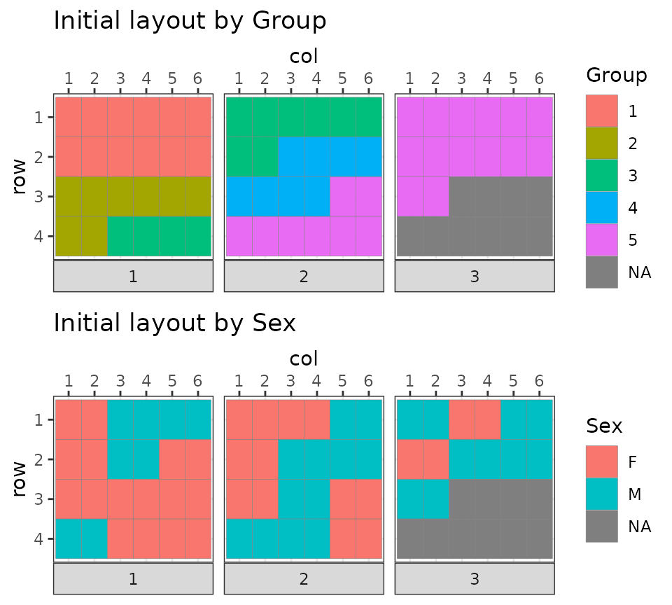
For optimization optimize_multi_plate_design()
iteratively calls optimize_design() for different steps of
the experiment. For across plate optimization osat scoring is used. For
within plate optimization spatial scoreing is used. The order of the
factors indicate their relative importance. In this case we prioritize
Group over Sex.
traces <- optimize_multi_plate_design(bc,
across_plates_variables = c("Group", "Sex"),
within_plate_variables = c("Group"),
plate = "plate",
row = "row",
column = "col",
n_shuffle = 2,
max_iter = 700,
quiet = TRUE
)
#> Warning in osat_score(bc, batch_vars = batch_vars, feature_vars = feature_vars,
#> : NAs in features / batch columns; they will be excluded from scoring
#> Warning in osat_score(bc, batch_vars = batch_vars, feature_vars = feature_vars,
#> : NAs in features / batch columns; they will be excluded from scoring
cowplot::plot_grid(
plotlist = list(
plot_plate(bc,
plate = plate, row = row, column = col, .color = Group,
title = "Initial layout by Group"
),
plot_plate(bc,
plate = plate, row = row, column = col, .color = Sex,
title = "Initial layout by Sex"
)
),
nrow = 2
)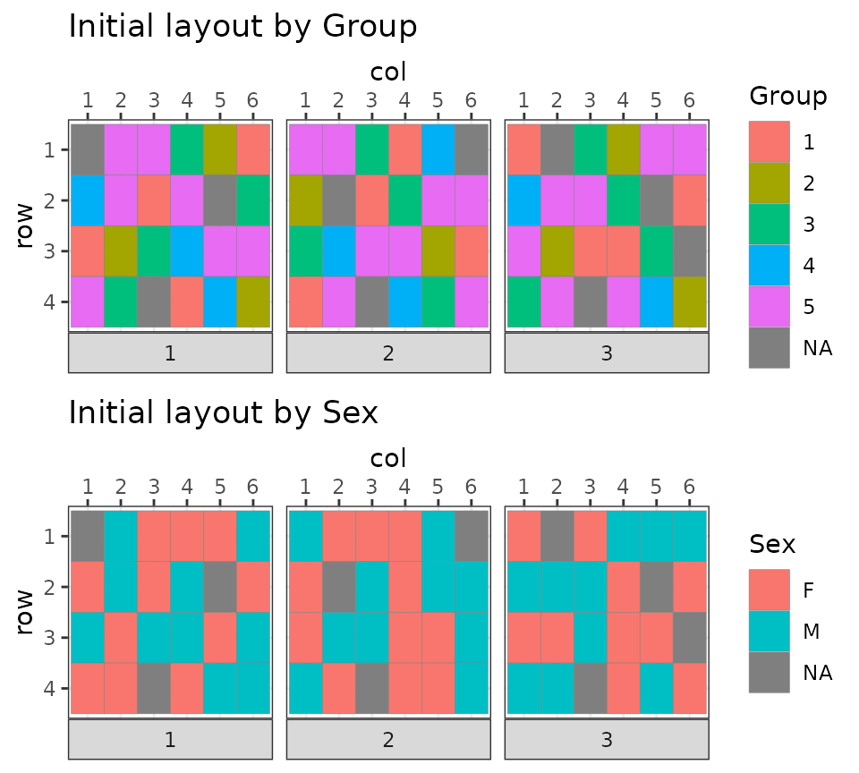
We can look at the trace objects for each internal
optimize_design run, returned from the wrapper
function.
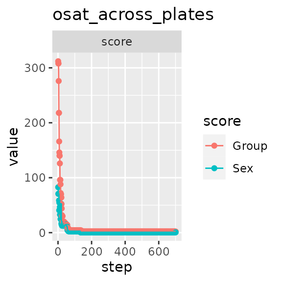
#>
#> $within_plate_1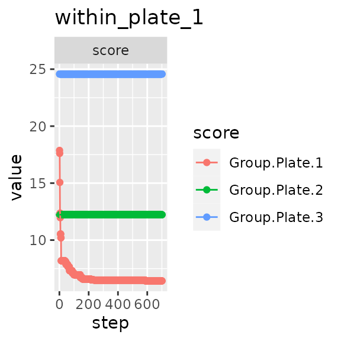
#>
#> $within_plate_2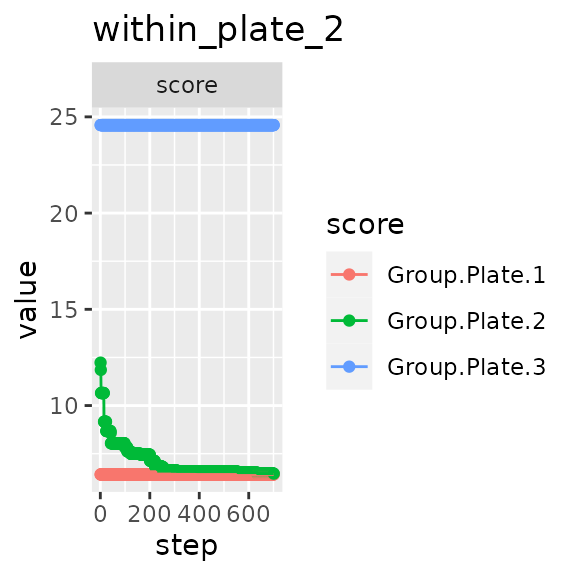
#>
#> $within_plate_3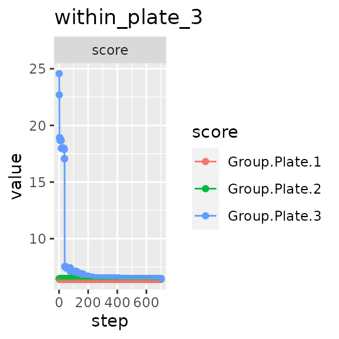
Note that internally the wrapper function sets up plate specific scoring functions that could manually be set up in the following way.
bc$scoring_f <- c(
Group = mk_plate_scoring_functions(bc,
plate = "plate", row = "row", column = "col",
group = "Group", penalize_lines = "hard"
),
Sex = mk_plate_scoring_functions(bc,
plate = "plate", row = "row", column = "col",
group = "Sex", penalize_lines = "hard"
)
)For more information on customized plate scoring see vignette
Plate scoring examples.
Sometimes layout requests can be more complicated. Assume we want to keep the two samples of a subject on the same 24 well plate.
Now we need to customize across plate optimization more so we need to split the process into two steps.
There are 31 subjects with each 2 time points, i.e. we need ~ 11 subjects per plate and want to balance by treatment, sex.
First we create a batch container with 3 batches that each fit 11
subjects i.e. have 11 virtual locations.
For layout scoring we use OSAT score on Group and
Sex variables.
Then we assign the samples randomly to the batches and look at their initial distribution.
set.seed(17) # gives `bad` random assignment
bc <- BatchContainer$new(
dimensions = list("batch" = 3, "location" = 11)
)
bc$scoring_f <- list(
group = osat_score_generator(batch_vars = "batch", feature_vars = "Group"),
sex = osat_score_generator(batch_vars = "batch", feature_vars = "Sex")
)
assign_random(
bc,
dat %>% select(SubjectID, Group, Sex) %>% distinct()
)
bc$get_samples() %>%
head() %>%
gt::gt()| batch | location | SubjectID | Group | Sex |
|---|---|---|---|---|
| 1 | 1 | NA | NA | NA |
| 1 | 2 | P32 | 5 | M |
| 1 | 3 | P10 | 3 | F |
| 1 | 4 | P26 | 3 | M |
| 1 | 5 | P17 | 5 | M |
| 1 | 6 | P07 | 2 | F |
cowplot::plot_grid(
plotlist = list(
bc$get_samples() %>% ggplot(aes(x = batch, fill = Group)) +
geom_bar() +
labs(y = "subject count"),
bc$get_samples() %>% ggplot(aes(x = batch, fill = Sex)) +
geom_bar() +
labs(y = "subject count")
),
nrow = 1
)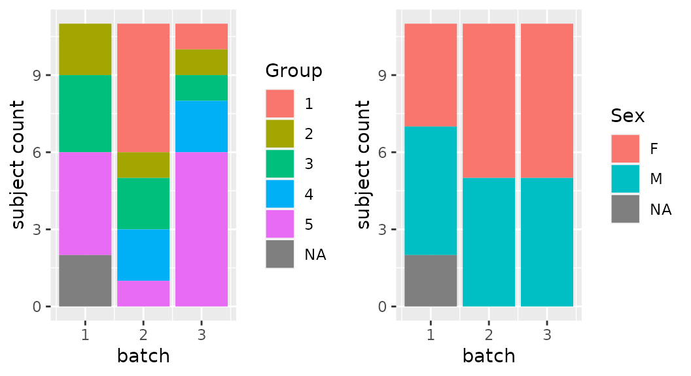
Optimizing the layout with optimize_design()
trace <- optimize_design(
bc,
n_shuffle = 1,
acceptance_func = ~ accept_leftmost_improvement(..., tolerance = 0.01),
max_iter = 150,
quiet = TRUE
)
#> Warning in osat_score(bc, batch_vars = batch_vars, feature_vars = feature_vars,
#> : NAs in features / batch columns; they will be excluded from scoring
#> Warning in osat_score(bc, batch_vars = batch_vars, feature_vars = feature_vars,
#> : NAs in features / batch columns; they will be excluded from scoringAfter optimization the group and sex of samples are equally distributed across all plates. The lower right panel shows the optimization trace of the scores.
cowplot::plot_grid(
plotlist = list(
bc$get_samples() %>% ggplot(aes(x = batch, fill = Group)) +
geom_bar() +
labs(y = "subject count"),
bc$get_samples() %>% ggplot(aes(x = batch, fill = Sex)) +
geom_bar() +
labs(y = "subject count"),
trace$plot(include_aggregated = TRUE)
),
ncol = 3
)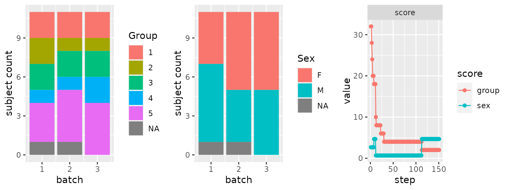
Using the result from step 1 we now optimize the layout within plates. For this we still need to add empty wells to each batch and assign the pre-allocated sample sheet in the right way to the new batch container.
dat <- dat %>%
left_join(bc$get_samples() %>%
select(SubjectID, batch))
#> Joining with `by = join_by(SubjectID)`
# add empty wells depending on how full the batch plate is
dat <- dat %>%
bind_rows(data.frame(
SubjectID = "empty",
SampleID = paste("empty", 1:(3 * 24 - nrow(dat))),
batch = rep(1:3, 24 - (dat %>% count(batch) %>% .$n))
))
bc <- BatchContainer$new(
dimensions = list("plate" = 3, "row" = 4, "col" = 6)
)
# initial assignment such that the original plate assigned stays the same
assign_in_order(
bc,
dat %>% arrange(batch)
)
cowplot::plot_grid(
plotlist = list(
plot_plate(bc,
plate = plate, row = row, column = col, .color = Group,
title = "Initial layout by Group"
),
plot_plate(bc,
plate = plate, row = row, column = col, .color = Sex,
title = "Initial layout by Sex"
)
),
nrow = 2
)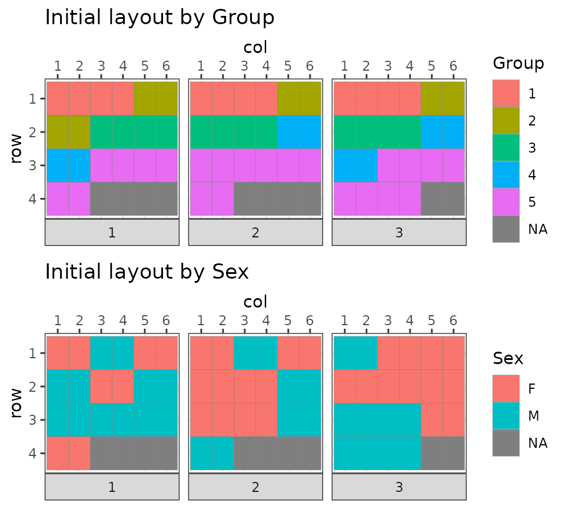
As we have already assigned samples to plates, the across plate optimization can be skipped in the wrapper. For distributing samples within each plate, we use variables Group and Sex again. The order of the factors indicate their relative importance.
traces <- optimize_multi_plate_design(bc,
within_plate_variables = c("Group", "Sex"),
plate = "plate",
row = "row",
column = "col",
n_shuffle = 2,
max_iter = 1000,
quiet = TRUE
)
cowplot::plot_grid(
plotlist = list(
plot_plate(bc,
plate = plate, row = row, column = col, .color = Group,
title = "Final layout by Group"
),
plot_plate(bc,
plate = plate, row = row, column = col, .color = Sex,
title = "Final layout by Sex"
)
),
nrow = 2
)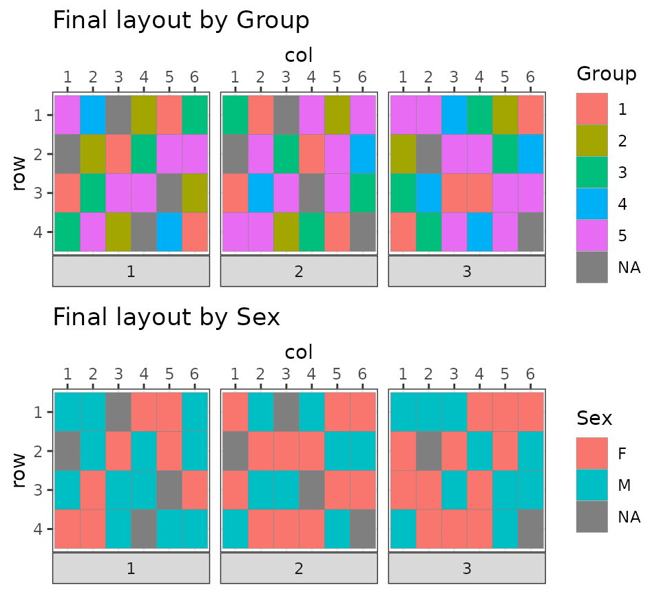
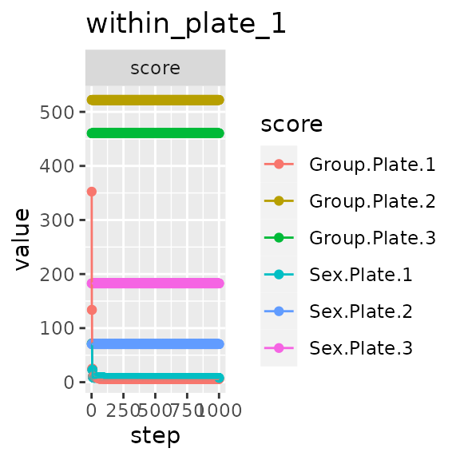
#>
#> $within_plate_2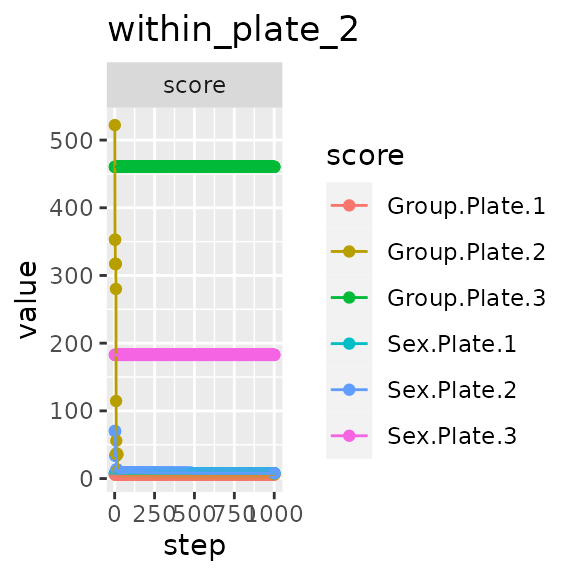
#>
#> $within_plate_3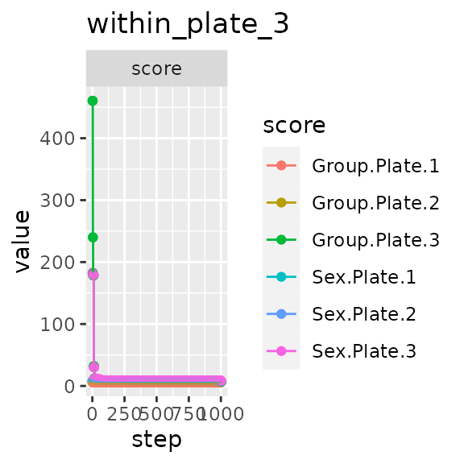
In the following we use the full data set of longitudinal subject
samples that are to be spread across several n-well plates, balanced for
treatment group and time point
longitudinal_subject_samples.
In addition to the normal samples there are also controls to be placed on each plate. These are added after the sample batching step.
For accommodation of samples to plates there are the following control samples available
longitudinal_subject_samples %>%
filter(SampleType != "Sample") %>%
count(SampleType, Group) %>%
gt::gt()| SampleType | Group | n |
|---|---|---|
| Control | Pool | 6 |
| Standard | SpikeIn | 15 |
Again we want to keep all samples of a subject on the same plate. A first step could be grouping subjects into 3 batches blocking by treatment, sex and age. There are 34 subjects with each 3 - 8 time points, i.e. we need ~ 11 subjects per plate.
We first create a ‘subjects’ dataset.
# get subject data for batching
subjects <- longitudinal_subject_samples %>%
filter(SampleType == "Sample") %>%
count(SubjectID, Group, Sex, Age, name = "nTimePoints") %>%
distinct()
subjects %>%
select(-nTimePoints) %>%
slice(1:5) %>%
gt::gt() %>%
gt::tab_options()| SubjectID | Group | Sex | Age |
|---|---|---|---|
| P01 | 1 | F | 71 |
| P02 | 1 | M | 74 |
| P03 | 1 | M | 76 |
| P04 | 1 | F | 83 |
| P05 | 2 | M | 79 |
Then we create a batch container for the samples with 3 batches
called plate that each fit 11 subjects i.e. have 11 virtual
locations.
For layout scoring we use OSAT score on Group and
Sex variables. We initially assign the samples randomly to
the batches and check the layout.
set.seed(42)
bc <- BatchContainer$new(
dimensions = list("plate" = 3, "locations" = 11)
)
bc$scoring_f <- list(
group = osat_score_generator(batch_vars = "plate", feature_vars = c("Group")),
sex = osat_score_generator(batch_vars = "plate", feature_vars = "Sex")
)
assign_random(bc, subjects)
cowplot::plot_grid(
plotlist = list(
bc$get_samples() %>% ggplot(aes(x = plate, fill = Group)) +
geom_bar() +
labs(y = "subject count"),
bc$get_samples() %>% ggplot(aes(x = plate, fill = Sex)) +
geom_bar() +
labs(y = "subject count"),
bc$get_samples() %>% ggplot(aes(x = factor(plate), y = Age)) +
geom_boxplot() +
geom_point()
),
nrow = 1
)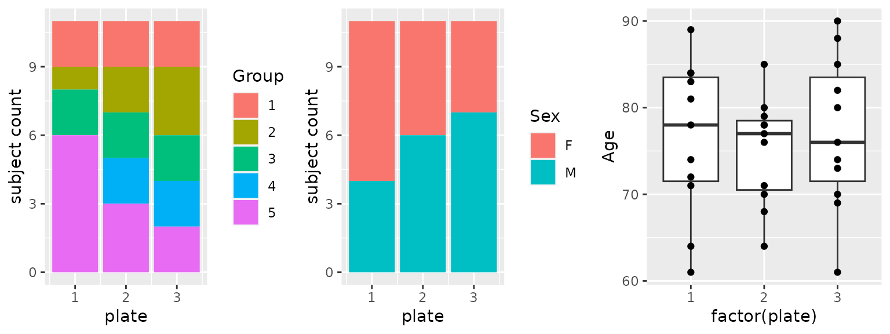
Optimizing the layout with optimize_design()
trace <- optimize_design(
bc,
n_shuffle = 1,
acceptance_func = ~ accept_leftmost_improvement(..., tolerance = 0.1),
max_iter = 150,
quiet = TRUE
)After optimization the group and sex of samples are equally distributed across all plates. The lower right panel shows the optimization trace of the scores.
cowplot::plot_grid(
plotlist = list(
bc$get_samples() %>% ggplot(aes(x = plate, fill = Group)) +
geom_bar() +
labs(y = "subject count"),
bc$get_samples() %>% ggplot(aes(x = plate, fill = Sex)) +
geom_bar() +
labs(y = "subject count"),
bc$get_samples() %>% ggplot(aes(x = factor(plate), y = Age)) +
geom_boxplot() +
geom_point(),
trace$plot(include_aggregated = TRUE)
),
nrow = 2
)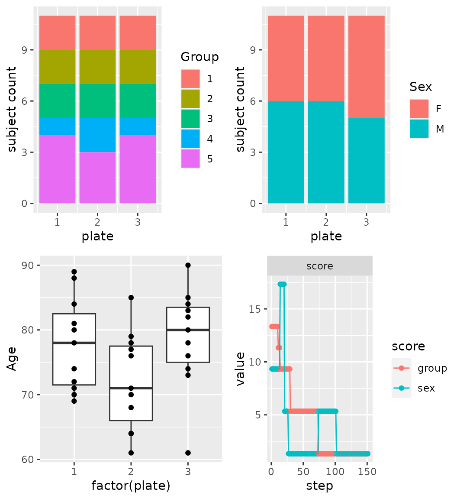
We start here by creating the batch container for all samples and making an initial assignment. Note there will be empty positions on the plates which we have to add before we assign the samples to the batch container in order.
samples_with_plate <- longitudinal_subject_samples %>%
left_join(bc$get_samples() %>%
select(-locations)) %>%
mutate(plate = ifelse(SampleType == "Sample", plate, str_extract(SampleID, ".$")))
#> Joining with `by = join_by(SubjectID, Group, Sex, Age)`
# not all plates have same amount of samples
samples_with_plate %>% count(plate)
#> # A tibble: 3 × 2
#> plate n
#> <chr> <int>
#> 1 1 77
#> 2 2 80
#> 3 3 73
# add empty wells depending on how full the batch plate is
# column 11 and 12 are left empty: 96 - 16 = 80 samples per plate
samples_with_plate <- samples_with_plate %>%
bind_rows(data.frame(
SubjectID = "empty",
SampleID = paste("empty", 1:(3 * 80 - nrow(samples_with_plate))),
plate = rep(1:3, 80 - (samples_with_plate %>% count(plate) %>% .$n)) %>%
as.character()
))
# new batch container for step 2
bc <- BatchContainer$new(
dimensions = list(plate = 3, row = 8, col = 12),
exclude = crossing(plate = 1:3, row = 1:8, col = 11:12)
)
# assign samples in order of plate
assign_in_order(
bc,
samples_with_plate %>%
arrange(plate) %>%
rename(orig_plate = plate)
)
# check if plate assignment is still correct
bc$get_samples() %>%
summarize(all(plate == orig_plate)) %>%
unlist()
#> all(plate == orig_plate)
#> TRUE
cowplot::plot_grid(
plotlist = list(
plot_plate(bc,
plate = plate, row = row, column = col, .color = Group,
title = "Initial layout by Group"
),
plot_plate(bc,
plate = plate, row = row, column = col, .color = SubjectID,
title = "Initial layout by SubjectID"
) +
theme(legend.key.size = unit(.25, "cm")),
plot_plate(bc,
plate = plate, row = row, column = col, .color = Sex,
title = "Initial layout by Sex"
)
),
nrow = 3
)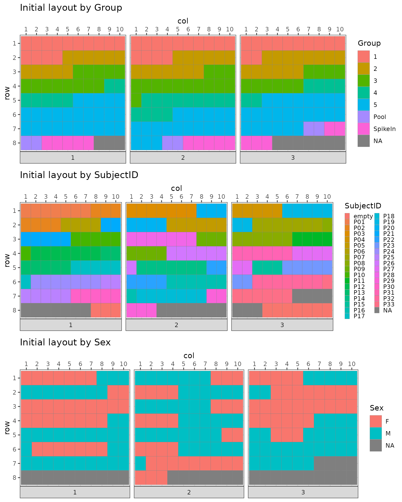
As we have already assigned samples to plates, the across plate optimization can be skipped in the wrapper. For distributing samples within each plate, we use variables Group and Sex again. The order of the factors indicate their relative importance.
traces <- optimize_multi_plate_design(bc,
within_plate_variables = c("Group", "SubjectID", "Sex"),
plate = "plate",
row = "row",
column = "col",
n_shuffle = 2,
max_iter = 1000,
quiet = TRUE
)
cowplot::plot_grid(
plotlist = list(
plot_plate(bc,
plate = plate, row = row, column = col, .color = Group,
title = "Final layout by Group"
),
plot_plate(bc,
plate = plate, row = row, column = col, .color =
SubjectID, title = "Final layout by SubjectID"
) +
theme(legend.key.size = unit(.25, "cm")),
plot_plate(bc,
plate = plate, row = row, column = col, .color = Sex,
title = "Final layout by Sex"
)
),
nrow = 3
)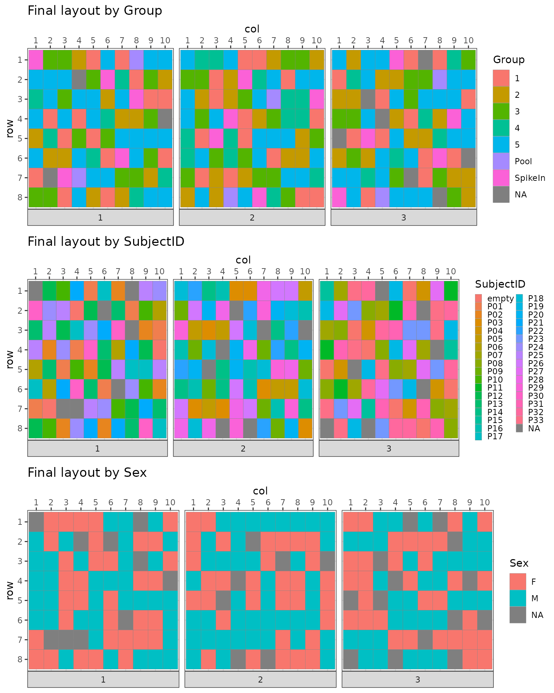
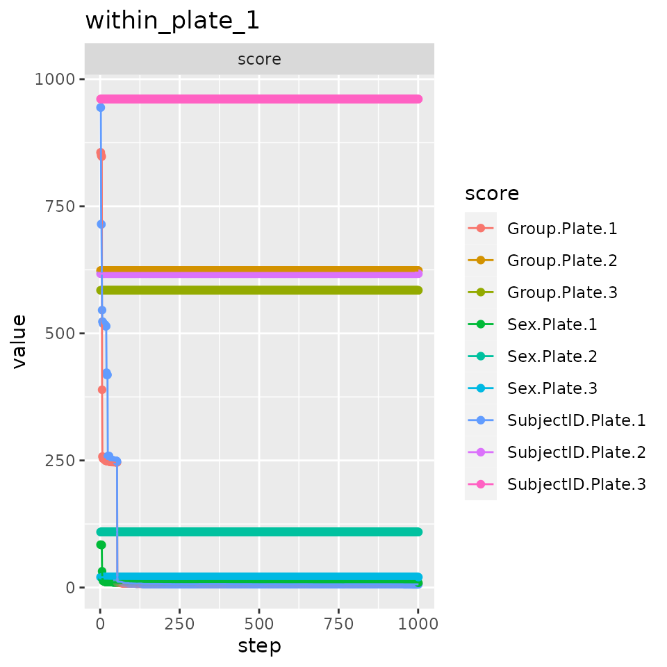
#>
#> $within_plate_2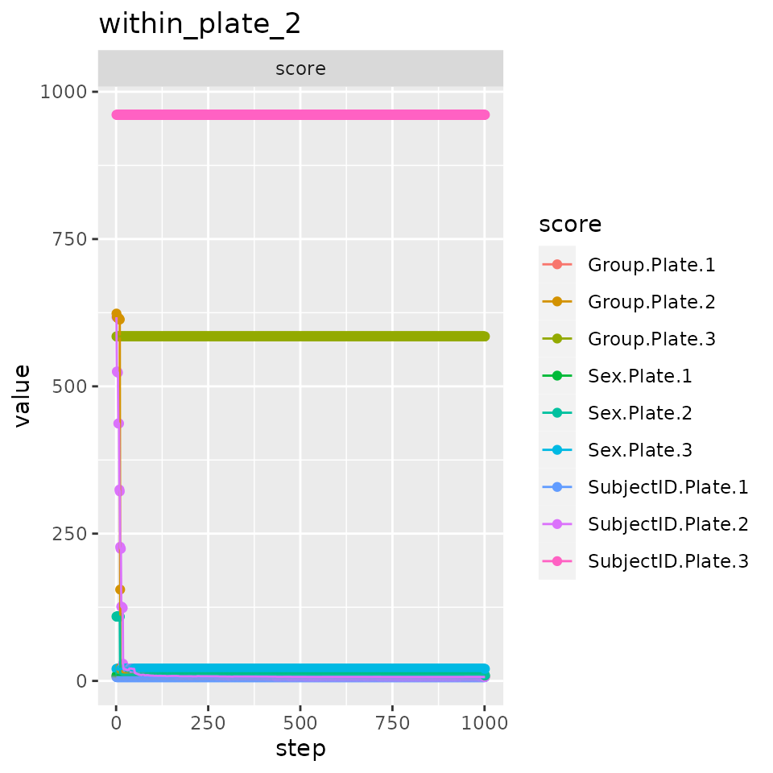
#>
#> $within_plate_3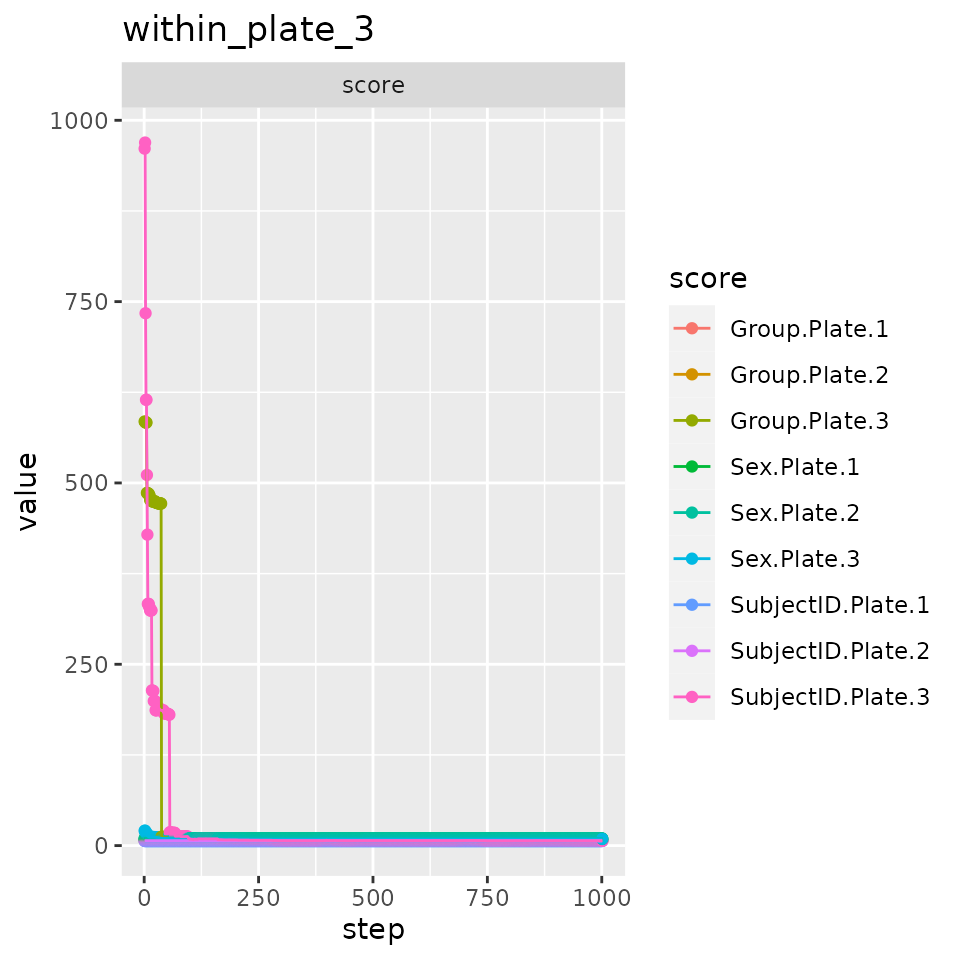